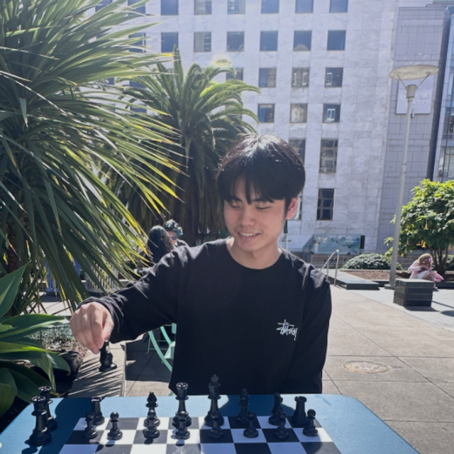

01
Quantum generative models & mutual information
QGANs whose objective is the mutual information between latent and generated registers. Why MI is a more honest target than fidelity, and what it buys us when the data is financial.
4th-year undergrad at SNU, exchange at UC Davis (Jan–Jun 2026). Research in quantum complexity and quantum machine learning.
Interests Quantum Computing · Problem Solving · Machine Learning · Quant Investment

Four threads I keep coming back to.
QGANs whose objective is the mutual information between latent and generated registers. Why MI is a more honest target than fidelity, and what it buys us when the data is financial.
A disentangling QNN architecture that estimates quantum entropies and distance measures from the same primitive — without separate circuits per quantity.
How much of VQE's success is the ansatz, and how much is the wall-clock budget? Building a small, reproducible harness — AutoVQE — to find out.
Where ideas from quantum information — entropy bounds, sample complexity, distributional distance — sharpen ordinary alpha research. Mostly in the form of dashboards I keep editing.
Things I'm building.
Reference implementation for the mutual-information-maximizing QGAN. Includes the financial-time-series experiments from the Sci. Reports paper.
A minimal, reproducible harness for hardware-aware VQE. Fixed wall-clock budget per problem; one editable train.py. Inspired by Karpathy's autoresearch.
A working dashboard for systematic alpha research — factor IC, regime tagging, and an MI-based feature screener carried over from the QGAN work.
Always happy to talk about anything!